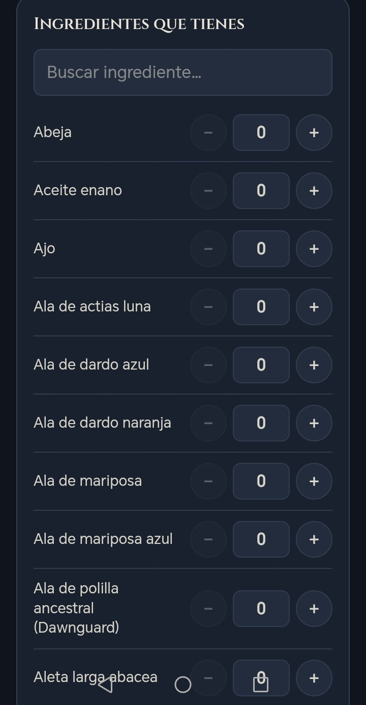
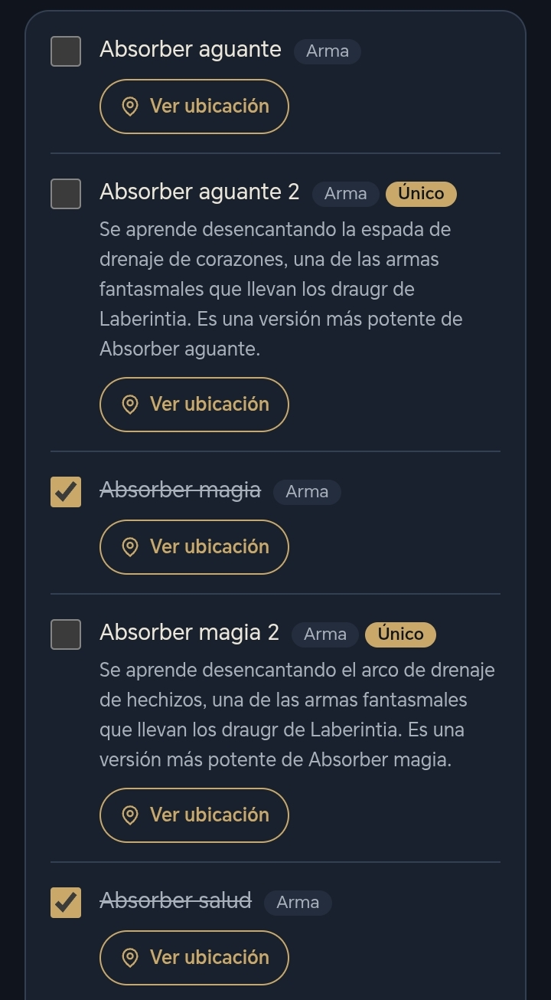
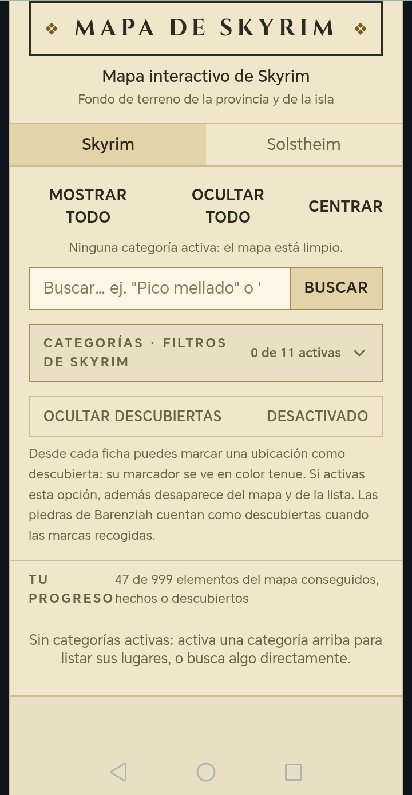
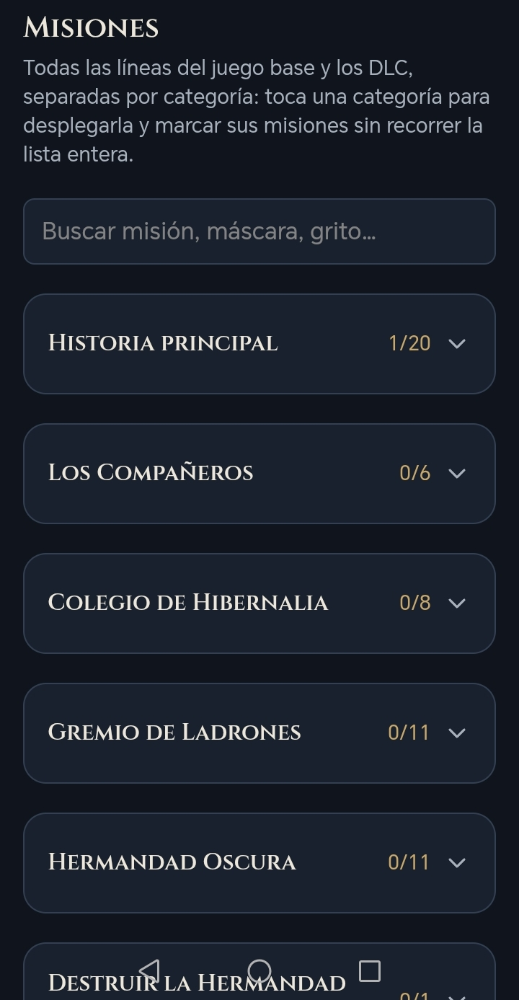

Alquimia
Consulta y organiza tus combinaciones e ingredientes sin perder el hilo de tus partidas.

Encantamientos
Revisa los efectos que ya dominas y mantén claro qué te falta por aprender.

Mapa y Ubicaciones
Explora por zonas y revisa lugares clave para no dejar rincones sin marcar.

Misiones
Sigue el avance de tus misiones clasificadas por zona de forma clara y ordenada.
